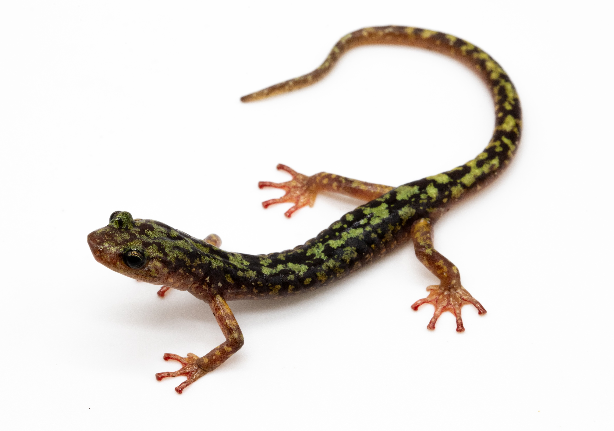
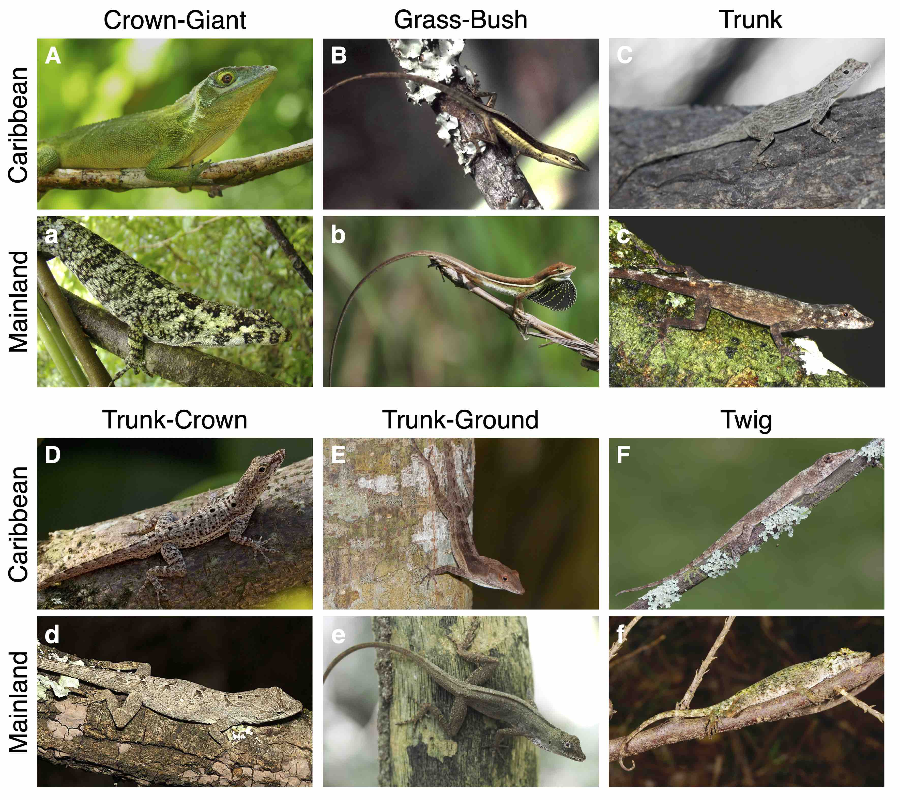

Climbing Animals
Salamanders

Many salamanders climb extensively but lack morphological adaptations, such as claws or adhesive toe pads, found in other climbing tetrapods - including anoles (see below). Salamanders of the genus Aneides are impressive climbers including the wandering salamander, A. vagrans, that have been found in redwood trees 300 ft (93 m) above the ground and the green salamander, A. aeneus, that are specialized crevice-dwellers that live on rock outcrops. I am interested in how these animals are able to climb in the absence of typical adaptations. To that end, I have compared the limb morphology and kinematics of climbing and non-climbing species. I found that climbers have morphological traits (long limbs and large feet) that likely enhance climbing performance. Although, even non-climbers with generalized morphologies can scale nearly vertical structures. We propose that behavioral changes are sufficient to climb, but secondary morphological changes promote exceptional climbing performance. Future work will examine climbing morphology and performance across a wider range of species.
Relevant publications:
- Huie JM, Park G, Kawano SM. 2025. Ecomorphology of climbing salamanders reveals a new suite of adaptations. Proceedings of the Royal Society B: Biological Sciences, 292(2053): 20251295. doi.org/10.1098/rspb.2025.1295
- Huie JM, Kawano SM. [in prep]. Limb kinematics and morphology increase salamander climbing performance.
Lizards
Caribbean anole lizards are textbook examples of convergent evolution and adaptive radiation. They exhibit strong relationships between structural habitat use and morphology (ecomorphs) that have repeatedly evolved across islands. While most studies focus on Caribbean anoles, the majority of species are in Central and South America. My first foray into anole biology investigated whether mainland anoles have evolved the same ecomorphs as their insular counterparts. While we found convergence across radiations and some mainland representatives of each Caribbean ecomorph, most mainland species appear morphologically distinct. Some of the outliers belong to a novel ground ecomorph that we described but additional work is needed to assess whether most mainland species represent intermediate ecomorph species or belong to additional classes that have not been described yet.
In subsequent work, we have leveraged the strong ecomorphological relationships found in anoles to infer the habitat use of a rare anole species (Anolis incredulus) for which there are only two known specimens. We also inferred the ecomorph of a fossil specimen represented by a single arm preserved in amber by comparing it to the morphology of extant species.
Relevant publications:
- Huie JM, Prates I, Bell RC, de Queiroz K. 2021. Convergent patterns of adaptive radiation between island and mainland Anolis lizards. Biological Journal of the Linnean Society, 134(1), 95-110. doi.org/10.1093/biolinnean/blab072
- de Queiroz K, Huie JM, Langan EM. 2023. No longer in doubt: Discovery of a second specimen corroborates the validity of Anolis incredulus Garrido and Moreno 1998 (Reptilia, Iguania). Zootaxa, 5284(1), 121-141. doi.org/10.11646/zootaxa.5284.1.4
- de Queiroz K, Huie JM, Hammel JU, Müller P, Baranov P. 2024. A new fossil Anolis lizard in Hispaniolan amber: ecomorphology and systematics. Journal of Herpetology, 58(1), 1-8. doi.org/10.1670/23-058
